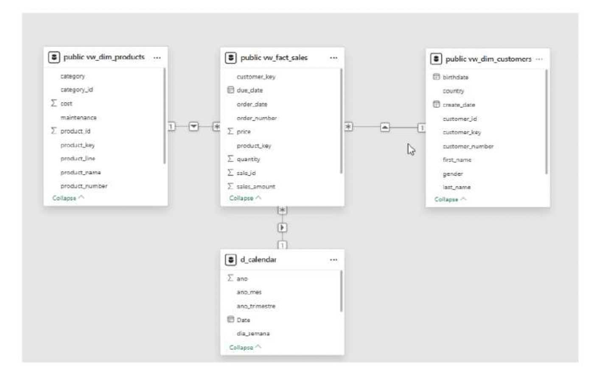
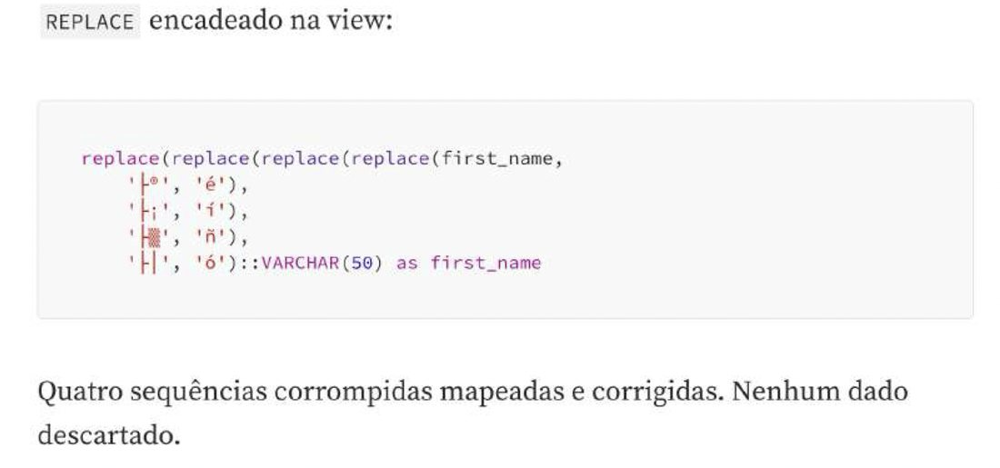

Bike Store: do caos no banco ao modelo estrela
Uma base de vendas com encoding corrompido, hierarquia com NULL e "n/a" contando como dado. Sem permissão de escrita, limpei tudo em views SQL, sem tocar na origem.

O problema
A empresa queria saber onde ganhava receita, onde ganhava lucro e quem eram os clientes. Três perguntas simples, que nenhum relatório respondia com confiança porque a base tinha erros que não aparecem em consulta comum.
Os 4 problemas
- Encoding corrompido: 20 nomes com caracteres latinos quebrados (UTF-8 lido como Latin-1). Corrigido com REPLACE encadeado na view.
- Hierarquia com NULL: a categoria CO_PE voltava sem categoria e subcategoria, e os pedais sumiam dos relatórios. Corrigido com CTE + COALESCE + UNION ALL.
- Datas como texto vazio: 19 pedidos com data "" em vez de NULL, que quebram série temporal. Corrigido com checagem de comprimento.
- "n/a" como valor: passava em filtros IS NOT NULL e inflava contagens. Corrigido com NULLIF.
Decisão de arquitetura
Sem acesso de escrita à tabela original, toda a limpeza ficou em views no PostgreSQL. O Power BI conecta só nas views. Qualquer correção futura no SQL chega ao painel sem mexer no modelo.
Validações
- Chaves sem duplicata nas dimensões e granularidade íntegra na fato (nenhum pedido + produto repetido).
- sales_amount = quantity × price em 100% das linhas.
- Nenhuma data de envio anterior à data do pedido; lead time médio de 7 dias.
O que os dados disseram
- 95% do lucro vem de bicicletas, com risco concentrado em um modelo.
- Acessórios são 18% dos pedidos, mas com 63% de margem contra 39% das bikes: cross-sell sobe a margem sem subir o volume.
Imagens

Meu papel
Todo o diagnóstico, as views SQL, a modelagem e a análise.
O que falta
Próximo passo de estudo: transformar as views em modelos dbt com testes (not_null, unique, relationships) e carga incremental.